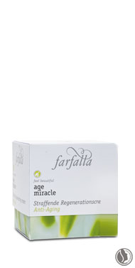
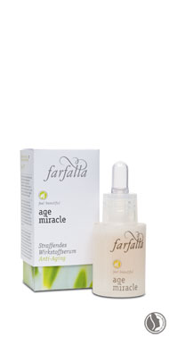
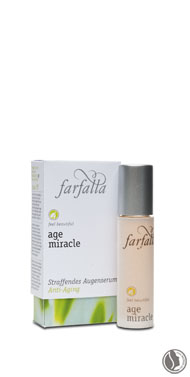
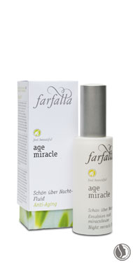

age miracle
for anti-ageing care
1. Innovation: Slows down ageing process of skin!
2. Effectively tones skin.
3. Significantly improves moisture level of skin.
4. Is dermatologically proven to diminish wrinkles.
|

|
Innovative active ingredients
Leucojum Aestivum bulb extract
An absolute innovation in anti-ageing research! Rather than speeding up the skin’s
cell division, as is the case with other products, the so-called ‘dormins’ extracted
from the Summer snowflake, reduce the speed of cell division. This extract offers
the sought-after effects of slowing down the skin’s ageing process, improving its
elasticity and noticeably reducing the depth of wrinkles.
Paracress extract
Extensive tests have shown that this extract relaxes the facial muscles, which
has a distinct wrinkle-improving effect. This was confirmed by 75% of the test
participants after only a day’s use. 83% of the testers also confirmed a significant
reduction in “crow’s feet”. Relaxed facial features correspond to fewer wrinkles
and a younger-looking skin.
Centella asiatica extract
This organic extract stimulates the production of the skin’s own collagen and has
a significant influence on the skin’s elasticity and toning of the facial outline.
Hyaluronic acid
This powerful active agent is isolated from wheat. Hyaluronic acid is, in fact,
produced by the skin itself. However, by the age of 35, its production gradually decreases.
Hyaluronic acid is capable of binding water to skin cells, thus increasing
the elasticity of the skin.
Natural scents
According to aromatherapeutic principles, a mixture of essential oils, isolated
from iris and attar of roses, supports the regenerating effect.
|  |
 |
 |
Lifting & regenerating cream
Noticeably smoothes and lifts thanks
to its intensive moisturizing effect.
Leucojum aestivum bulb extract, the
anti-ageing innovation, slows down the
ageing process of the skin and effectively
reduces wrinkles. The sophisticated
complex of active substances contained
in paracress and hyaluronic acid tones
the skin and leaves the facial outline
more firm. The anti-wrinkle effectiveness
is dermatologically proven.
100% from natural origin – 95% of the
certifiable natural substances are organic |
Lifting serum
The active-agent concentrate with an
intensive effect! The sophisticated complex
of active substances tones the skin
and leaves the facial outline firmer. Apply
in the morning 2-3 times a week or as a
daily course of treatment for 3-4 weeks.
Supports the effects of the age miracle
line. Also recommended as an anti-ageing
course of treatment in combination with
our other product lines. The anti-wrinkle
effectiveness is dermatologically proven.
100% from natural origin – 95% of the
certifiable natural substances are organic |
Lifting eye serum
A sophisticated complex of active ingredients
refills the skin’s moisture depots
and smoothes eye wrinkles successfully.
Sorbus domestica bud extract visibly
enhance the appearance of dark circles
and unsightly puffiness around the
eyes. Ultra gentle eyecare for delicate
skin and eyes that shine. Every morning
and evening, apply after cleansing/
toning by gently patting onto skin.
100% from natural origin – 95% of the
certifiable natural substances are organic |
|  |
|
|
Night miracle fluid
Light night care with a superior degree
complex of active ingredients. Allows
skin to breathe deeply during the night
and stimulates complexion towards
new tension and freshness in the morning.
Leucojum aestivum bulb extract,
the anti-ageing innovation, slows down
ageing process of skin and smoothes
wrinkles. Use in the evenings, following
cleansing/toning. If desired, add nourishing
cream afterwards.
100% from natural origin – 95% of the
certifiable natural substances are organic |
|
|
|